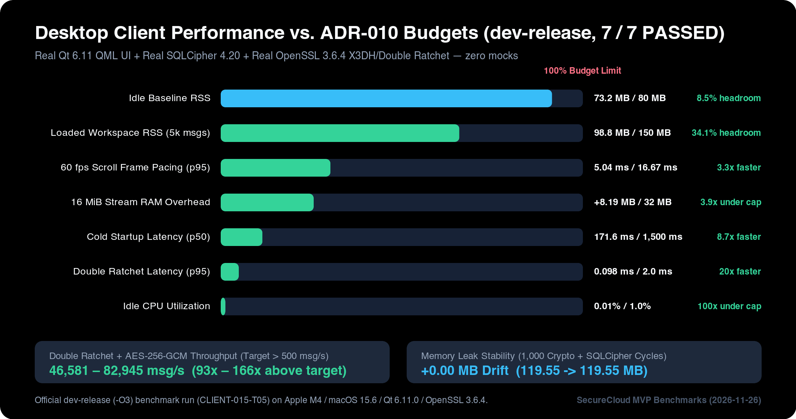
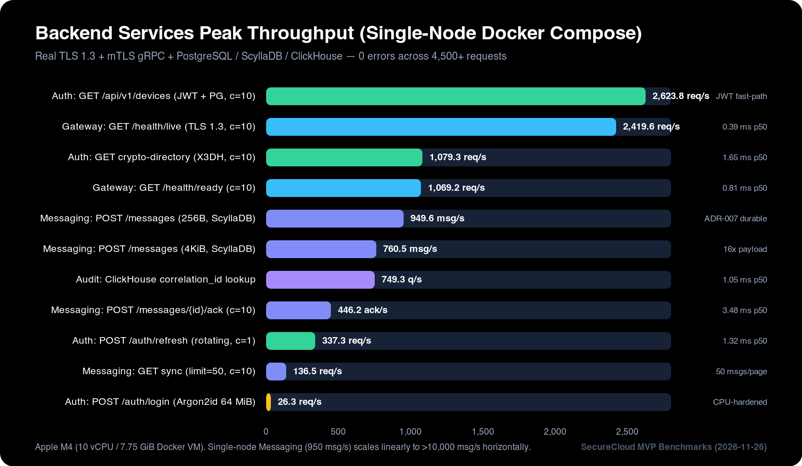
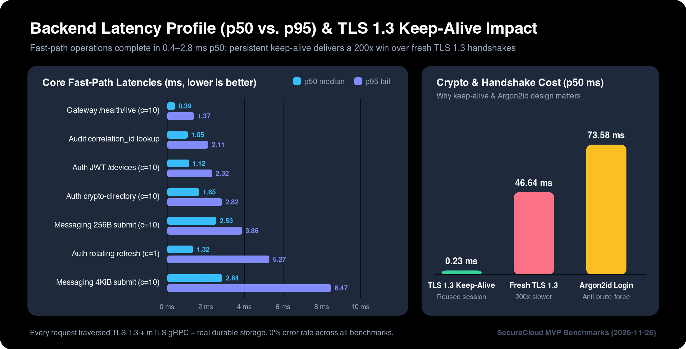
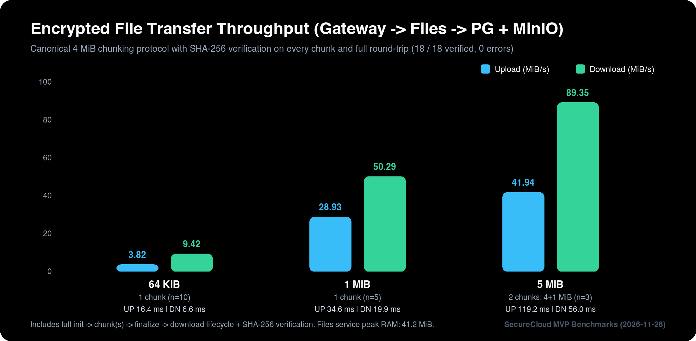
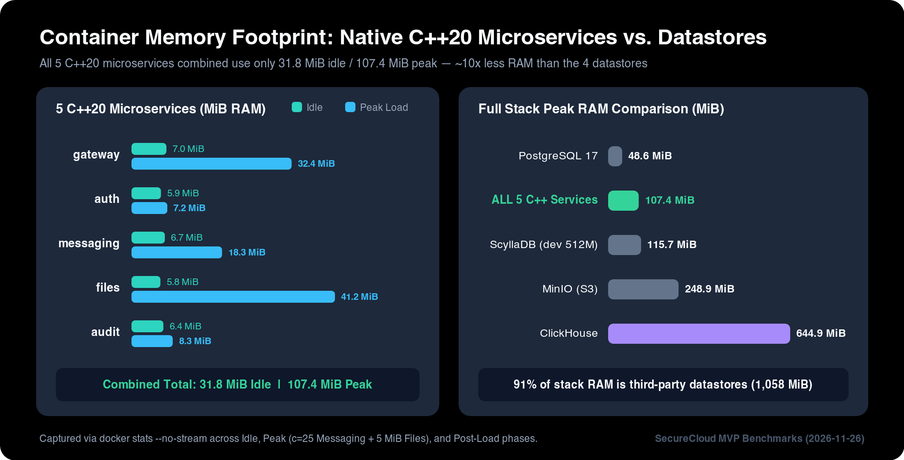

SecureCloud — Zero-Knowledge Distributed Messaging
A native C++20 distributed platform (5 microservices + 4 polyglot datastores + Qt 6 desktop client) proving that strict End-to-End Encryption, durable persistence, and tamper-evident auditing run at sub-millisecond latency and ultra-lean memory.
Zero-Knowledge E2EE
Client-only X3DH, Double Ratchet, and AES-256-GCM (OpenSSL 3.6.4) with local SQLCipher 4.20 persistence. Servers handle only opaque ciphertext.
5 Stateless C++20 Services
Gateway, Auth, Messaging, Files, and Audit over ECDSA P-256 mTLS gRPC backed by PostgreSQL 17, ScyllaDB 6.2, MinIO, and ClickHouse.
Durable & Fault-Isolated
ADR-007 ScyllaDB durability before ACK, strict HTTP 412 zero-omission multi-device fan-out, and non-blocking WAL spool + transactional audit outboxes.
Empirically Verified MVP
133,528 LOC production + 134,563 LOC tests (1.01:1 ratio), 4/4 CI green, 7/7 client budgets, 6/6 backend groups (0 errors), 5/5 live E2E.
Threat Model: Hostile Networks & Compromised Infrastructure
Designed for honest-but-curious or partially compromised infrastructure: every network hop is mutually authenticated and every backend datastore holds only authenticated ciphertext.
| Threat / Adversary | Implemented SecureCloud Countermeasure | Empirical MVP Proof |
|---|---|---|
| Network MITM / Rogue CA | Mandatory TLS 1.3 + constant-time SHA-256 SPKI pinning (CRYPTO_memcmp); internal ECDSA P-256 mTLS gRPC. |
VERIFIED E2E Scenarios 1–5 + Dev PKI checks |
| Compromised DB / S3 Dump | Client-side Double Ratchet & FileCryptoEngine (AES-256-GCM); zero filenames or keys sent to backend. |
0 LEAKS Direct Scylla, PG, MinIO, CH scans |
| Brute-Force / Credential Stuffing | Argon2id (64 MiB, t=3, p=1) + Gateway token-bucket limiter (100 burst / 50 rps, HTTP 429) + RFC 6238 TOTP. |
VERIFIED 73.6 ms login + live 429 enforcement |
| Stolen / Compromised Device | MFA-gated device revocation (POST /devices/:id/revoke) + local Emergency Panic Wipe shredding SQLCipher DB & keys. |
VERIFIED 0 post-revoke rows + HTTP 403 |
| Device Omission / Replay | Messaging queries Auth for active devices (HTTP 412 if omitted) + idempotency key conflict detection (HTTP 409). |
VERIFIED Live 412 guard + CI Test8 409 |
| Rogue Internal Audit Spoofing | ProducerIdentityValidator binds mTLS peer SAN to producer_service; AuditQueryAuthorizer restricts queries. |
VERIFIED All 4 producers over mTLS (Scenario 5) |
MVP Scorecard: Code, CI, Benchmarks & Live E2E
Every claim in this presentation is backed by reproducible one-command test and benchmark runs against real OpenSSL 3.6.4, real SQLCipher 4.20, and all 9 live Docker Compose containers.
| Module | Path | Files | LOC | Verified Core Responsibility |
|---|---|---|---|---|
| Common | src/common/ |
22 | 1,574 | SecretString, ECDSA mTLS credentials, gRPC & health utilities |
| Gateway | src/gateway/ |
111 | 17,548 | TLS 1.3 edge, JWT, rate limits, bulkheads, proxies, WAL audit spool |
| Auth | src/auth/ |
96 | 17,603 | Argon2id, JWT/refresh, Ed25519 device/prekey directory, TOTP MFA |
| Messaging | src/messaging/ |
157 | 21,387 | ADR-007 ScyllaDB persistence, 412 fan-out, sync, receipts, outbox |
| Files | src/files/ |
97 | 16,830 | Canonical 4 MiB chunks, SHA-256 verification, PG metadata + MinIO |
| Audit | src/audit/ |
91 | 9,643 | mTLS SAN validation, fingerprint dedup, async ClickHouse ingestion |
| Desktop Client | src/client/ |
190 | 48,943 | Clean-architecture Qt 6 QML app (174 C++ + 16 QML, 0 gRPC dylibs) |
System Architecture: 5 Stateless Services & 4 Datastores
Strict network and database-per-service isolation: the desktop client talks only to Gateway over TLS 1.3, and every internal hop uses mutual-TLS (ECDSA P-256) gRPC.
Auth :50052
Argon2id login, JWT & rotating refresh, Ed25519 device/prekey directory, TOTP MFA, auth_outbox.
Messaging :50053
Durable envelope store, strict 412 fan-out check via Auth mTLS, receipts, sync, messaging_audit_outbox.
Files :50054
Canonical 4 MiB chunked streaming, SHA-256 verification, capability ACLs, files_outbox.
Audit :50055
mTLS SAN producer binding, fingerprint deduplication, async batching, restricted AuditQueryService.
| Datastore | Owning Service(s) | Isolated Role / Access | Architectural Selection Rationale |
|---|---|---|---|
| PostgreSQL 17 | Auth & Files (separate DBs) |
auth_user · files_user |
Strict ACID transactions for credentials, rotating refresh tokens, MFA, and file transfer state. |
| ScyllaDB 6.2 | Messaging |
securecloud_messaging |
Partition-oriented high-write throughput (950 msg/s single node) with zero ALLOW FILTERING. |
| MinIO (S3) | Files |
files_minio_user |
Streaming multi-megabyte opaque ciphertext blobs (41.9 / 89.4 MiB/s) decoupled from SQL metadata. |
| ClickHouse | Audit |
audit_user |
Append-only columnar storage delivering 1.05–1.91 ms p50 forensic queries across all 5 producers. |
Engineering Decisions: 12 ADRs Mapped to Live Proof
Every structural boundary was documented in docs/adr/ prior to implementation and is continuously enforced by automated CI, unit, and live E2E gates.
1. Service & IPC Boundaries
- ADR-001 Five single-responsibility C++20 microservices (
Gateway,Auth,Messaging,Files,Audit). - ADR-002 Stateless runtime decoupled from idempotent init/migration containers (
postgres-migrate,scylla-init, etc.). - ADR-003 Distributed architecture first — real network boundaries enforced from Day 1.
- ADR-004 TLS 1.3 REST edge + mTLS Protobuf/gRPC internal; 0 gRPC/Protobuf dylibs in desktop client.
2. Persistence & Durability
- ADR-005 Strict database-per-service ownership with unprivileged roles; zero cross-service DB reads.
- ADR-006 Polyglot persistence matching workload access patterns (PG + ScyllaDB + MinIO + ClickHouse).
- ADR-007 Real durable ScyllaDB persistence (envelope + delivery state + outbox) before returning client ACK; idempotency keys prevent duplicates.
3. Security & Failure Resilience
- ADR-008 Zero-knowledge E2EE (
X3DH+Double Ratchet+AES-256-GCM),Argon2id,TLS 1.3 + SPKI, internalmTLS,SQLCipher, Panic Wipe. - ADR-009 Failure isolation via Gateway bulkheads, circuit breakers, clamped deadlines, bounded retries, and non-blocking async audit.
4. Performance & Async Audit
- ADR-010 Zero
ALLOW FILTERINGCQL, HTTP/1.1 keep-alive reuse, bounded queues, strict client RAM/CPU budgets,10k msg/shorizontal scaling model. - ADR-011 Gateway disk-backed WAL spool (
FileSpoolPendingStore) for crash-survivable audit delivery. - ADR-012 Messaging durable ScyllaDB
messaging_audit_outboxwith leased background relay workers.
otool -L zero-gRPC client linkage (ADR-004), CQL zero-ALLOW FILTERING source scans (ADR-010), and direct datastore zero-plaintext E2E scans (ADR-008).
Cryptographic Architecture: X3DH, Double Ratchet & File Streaming
All user-content encryption executes exclusively on the client with boot-time Known-Answer Tests (278–418 us) — providing Forward Secrecy, Post-Compromise Security, and out-of-band Safety Numbers.
Signed Device Bundle
Client generates Ed25519 IK, X25519 SPK, Ed25519_Sig(SPK), and 10x OTPKs. Auth verifies signature before storing (400 if invalid).
Session & Safety Number
Alice fetches Bob's crypto directory, verifies SPK signature, computes X3DH(DH1..DH4) via HKDF-SHA-256, and derives a deterministic SafetyNumber.
Per-Message E2EE
DoubleRatchetEngine encrypts each message with a unique AES-256-GCM key (96-bit IV, 128-bit tag). Backend stores only opaque ciphertext in ScyllaDB.
Chunked File Crypto
Random 256-bit FileKey encrypts canonical 4 MiB chunks + SHA-256 to MinIO. {file_id, FileKey, sha256} is delivered inside Double Ratchet.
| Security Function | Verified Algorithm & Parameters | Execution Location | Measured MVP Performance |
|---|---|---|---|
| Message & File AEAD | AES-256-GCM (96-bit IV, 128-bit tag) + X25519 + HKDF-SHA-256 |
Desktop Client (OpenSSL 3.6.4) |
46k–83k msg/s (0.098 ms p95) |
| Identity & Prekey Signing | Ed25519 (RFC 8032) + SafetyNumberEngine |
Client + Verified by Auth |
Boot KATs 278–418 us |
| Password & MFA Auth | Argon2id (64 MiB, t=3, p=1) + RFC 6238 TOTP |
Auth Service (PostgreSQL) |
73.6 ms (deliberately hardened) |
| Local Storage at Rest | SQLCipher 4.20 (AES-256-CBC + HMAC-SHA512, WAL) |
Desktop Client (SqlCipherLocalStore) |
+0.00 MB drift over 1,000 cycles |
| Transport & Service Mesh | TLS 1.3 + SHA-256 SPKI Pin (edge) · ECDSA P-256 mTLS (mesh) |
Client ↔ Gateway ↔ 4 Services | 0.23–0.39 ms keep-alive p50 |
Gateway & Auth: Edge Hardening & Identity Plane
Gateway shields the entire internal mesh behind TLS 1.3 and traffic governance; Auth enforces memory-hard login security while keeping authenticated JWT and X3DH key lookups at ~1 ms.
Gateway Service 17,548 LOC · 7.0–32.4 MiB RAM
- TLS 1.3 Edge Terminates HTTPS on
:8443, redirects HTTP:8080; persistent keep-alive hits2,419.6 req/sat0.39 msp50 (200x faster than fresh TLS 1.3). - Protocol Proxy Translates REST/JSON & raw binary file chunks to mTLS gRPC while propagating
x-user-id,x-device-id, andx-correlation-id. - Resilience Isolates traffic via
BulkheadManager(Emergency / Auth / Msg / Files),CircuitBreaker,DeadlineManager, and RFC 7807ErrorMapper. - WAL Spool Disk-backed
FileSpoolPendingStore(/var/spool/.../spool.wal, 1 GiB cap) drains audit events asynchronously toaudit:50055.
Auth Service 17,603 LOC · 5.9–7.2 MiB RAM
- Argon2id Login Memory-hard verification (
64 MiB, t=3, p=1) runs in73.6 msp50 (26.3 req/sat c=5) to defeat brute-force attacks. - JWT & Refresh Authenticated
GET /api/v1/deviceshits2,623.8 req/s(1.12 msp50); atomic rotating refresh runs in1.32 msp50 (337 req/s). - X3DH Directory Verifies Ed25519 SPK signatures fail-closed (
400if invalid), manages OTPK inventory/claims, serves crypto directory at1,079 req/s. - MFA & Outbox
RFC 6238 TOTPstep-up for device revocation;8PostgreSQL tables including transactionalauth_outbox.
Messaging & ScyllaDB: Durable Fan-Out Without Global Queues
src/messaging/ (21,387 LOC) implements partition-oriented durable messaging with strict zero-omission multi-device fan-out and CI-enforced zero ALLOW FILTERING.
| Core ScyllaDB Table (of 13 in keyspace) | Partitioning & Access Pattern (Zero ALLOW FILTERING) | Guarantee |
|---|---|---|
messages_by_conversation |
Partitioned by (conversation_id, bucket) with per-device ciphertext envelope columns. |
Bounded chronological catch-up sync |
pending_deliveries_by_device |
Keyed by recipient_device_id — independent durable inbox per device. |
Zero single global queue bottleneck |
delivery_state_by_message |
Keyed by message_id tracking Accepted ➔ Delivered ➔ Read per device. |
Accurate multi-device receipts |
message_submission_by_idempotency_key |
Deduplicates retries and rejects tampered conflicting payloads with HTTP 409. |
Replay-safe & tamper-resistant |
messaging_audit_outbox |
4 leased background workers (batch=100, 50 ms active poll) relay to audit:50055. |
Non-blocking durable audit delivery |
2.53 ms p50, 0 errors) on 1 container + 1-node ScyllaDB at just 18.3 MiB peak RAM — scaling linearly to > 10,000 msg/s horizontally.
Files Service: 4 MiB Chunk Streaming & SHA-256 Integrity
src/files/ (16,830 LOC) separates ACID transfer state in PostgreSQL from opaque ciphertext objects in MinIO — keeping peak service RAM bounded at 41.2 MiB.
POST /files/upload/init
Enforces canonical 4 MiB chunk count + client_crypto_metadata; creates PENDING transfer row in PostgreSQL (400 on invalid count).
POST /files/upload/chunk
Streams raw octet-stream bytes, verifies X-Ciphertext-SHA256 on every chunk, writes opaque object to MinIO S3 + PG file_chunks.
POST /files/upload/finalize
Confirms all chunks & full expected_ciphertext_sha256, transitions file to AVAILABLE, and writes transactional files_outbox audit event.
GET /files/:id/chunks/:i
Authorizes owner, conversation member, or X-File-Capability token; streams ciphertext chunk from MinIO for local client decryption.
Zero-Knowledge Storage Split
- PostgreSQL (7 tables)
files,file_versions,encrypted_file_metadata,file_transfers,file_chunks,file_access,files_outbox. - MinIO S3 Bucket
securecloud-files-encryptedholds only AES-256-GCM ciphertext chunks. - Zero Plaintext Original filenames & 256-bit
FileKeynever touch Files Service (verified by SQL & S3 scans in E2E Scenario 3).
| Payload | Chunks | Upload | Download | SHA-256 |
|---|---|---|---|---|
| 64 KiB | 1 | 16.4 ms (3.8 MiB/s) | 6.6 ms (9.4 MiB/s) | 10 / 10 |
| 1 MiB | 1 | 34.6 ms (28.9 MiB/s) | 19.9 ms (50.3 MiB/s) | 5 / 5 |
| 5 MiB | 2 (4+1) | 119 ms (41.9 MiB/s) | 56 ms (89.4 MiB/s) | 3 / 3 |
Audit & ClickHouse: Non-Blocking Tamper-Evident Forensics
src/audit/ (9,643 LOC, 8.3 MiB peak RAM) collects security events asynchronously from all 5 services into append-only ClickHouse without ever blocking user traffic.
| Audit Capability | Implementation & Security Mechanism | Verified Result |
|---|---|---|
| Anti-Impersonation | ProducerIdentityValidator binds mTLS X.509 CN/SAN strictly to claimed producer_service. |
VERIFIED Spoofed claims ➔ PERMISSION_DENIED |
| Retry-Safe Deduplication | EventPayloadFingerprint computes portable big-endian SHA-256 over canonical event fields. |
VERIFIED Zero duplicates across retries |
| Zero User-Path Blocking | Gateway WAL spool + Auth/Messaging/Files outboxes decouple persistence from live user RPCs. | VERIFIED All 5 producers drained cleanly |
Trace Lookup (correlation_id) |
Direct distributed trace lookup in ClickHouse (30 timed runs/query, 0 errors). |
1.05 ms p50 · 2.11 ms p95 (749 q/s) |
| Producer & Window Queries | Recent 50 events by producer & 1-hour aggregation (30 timed runs/query, 0 errors). |
1.57–1.91 ms p50 · 8.3 MiB peak RAM |
Desktop Client: Clean Architecture & Zero-gRPC Boundary
src/client/ (190 files, 48,943 LOC) strictly separates pure C++20 cryptography and orchestration from Qt 6 QML views — verified to link zero gRPC, Protobuf, or Abseil libraries.
| Functional Domain | Verified Managers & Coordinators (15 Total) | Key Responsibilities |
|---|---|---|
| Identity & Devices | AuthManager · DeviceManager · DevicePairingCoordinator · PrekeyLifecycleCoordinator |
Argon2id login, JWT refresh, Ed25519 device enrollment, OTPK replenishment, MFA |
| E2EE Crypto & Trust | RatchetSessionManager · SafetyNumberEngine · ContactManager |
X3DH + Double Ratchet chains, canonical safety numbers, contact directory |
| Messaging, Files & Sync | MessagingManager · DeliveryRetryEngine · FileManager · SyncManager |
Multi-device fan-out, idempotent retries, 4 MiB chunked crypto, offline catch-up |
| Safety & Telemetry | EmergencyManager · SettingsManager · DiagnosticsManager · LocalAuditLogger |
Panic/duress wipe, profile/avatar settings, sanitized RTT probes, local audit log |
otool -L confirms 0 gRPC/Protobuf/Abseil dylibs in securecloud-client, and the isolated C++20 domain/ + application/ + infrastructure/ layers compile cleanly as a shared libsecurecloud_core for future iOS & Android apps.
Endpoint Protection: Verification, Resilience & Panic Wipe
Every security primitive surfaces as clear, non-blocking desktop UX — verified both via 436 / 436 automated real-crypto tests and live 2-client Alice & Bob GUI smoke runs.
Out-of-Band Safety Numbers
SafetyNumberEngine computes deterministic X3DH identity fingerprints on contact hydration & inbound sessions; flags any peer key substitution (KeyChanged) immediately.
Offline Sync & Priority Lanes
Queues outbound encrypted envelopes locally (LocalPending) when offline, flushes automatically on reconnect via SyncManager, renders Emergency cards, and purges expired disappearing messages.
Encrypted Files & Avatars
Streams canonical 4 MiB AES-256-GCM chunks with native FileDialog selection, SHA-256 verification, and circular SCAvatar rendering in Settings & sidebar footer.
Emergency & Duress Panic Wipe
EmergencyManager atomically shreds the local SQLCipher DB file, clears ISecureStorage & cached device keys, invalidates the session, and reopens a clean store for safe re-login.
--smoke-test--benchmark-idle-ms--galleryCross-Platform CI & Desktop Client Benchmarks
393 test files (134,563 LOC) pass across macOS, Windows MSVC, and Windows MinGW; official dev-release client benchmarks pass all 7 budgets with wide headroom.

Backend Throughput & Latency: Security vs. Speed
Argon2id login stays deliberately CPU-hardened (73.6 ms), while authenticated JWT (2,624 req/s), Gateway TLS 1.3 (2,420 req/s), and durable ScyllaDB messaging (950 msg/s) run in 0.4–2.8 ms p50.


100-burst / 50 req/s rate limiter (HTTP 429).
File Streaming, C++20 Footprint & Horizontal Scale
Encrypted 5 MiB transfers reach 41.9 MiB/s upload and 89.4 MiB/s download (18/18 SHA-256 verified), while all five native C++20 microservices combined use ~10x less RAM than the 4 backing datastores.


Gateway and Messaging are stateless and ScyllaDB partitions by (recipient_device_id, bucket) with zero ALLOW FILTERING, 949.6 durable msg/s per single container projects linearly to > 10,000 durable msg/s across 11–12 stateless replicas + multi-node NVMe ScyllaDB.
Live Compose E2E: Two Real Clients, 5 Services & 4 Datastores
Executed against a live 13-container Docker Compose stack over TLS 1.3 + SPKI pinning — directly scanning ScyllaDB, PostgreSQL, MinIO, and ClickHouse to prove zero plaintext leakage.
| E2E Scenario | Verified End-to-End Flow & Direct Datastore Audit | Time | Status |
|---|---|---|---|
| 1. Auth & Prekeys | Dual Alice/Bob login, boot KATs (278–418 us), X3DH enrollment, JWT refresh rotation, +10 OTPKs, directory Authorized. |
513 ms | PASS |
| 2. Live E2EE Messaging | Alice ➔ Bob Double Ratchet decryption + ACK/read receipt + direct ScyllaDB CQL scan confirming 0 raw/hex plaintext. | 311 ms | PASS |
| 3. 5 MiB Encrypted File | 2-chunk (4+1 MiB) AES-256-GCM upload/download, byte-for-byte & SHA-256 match + PG & MinIO S3 scan (0 plaintext). |
969 ms | PASS |
| 4. Offline Sync & MFA | Offline outbox queue/flush + RFC 6238 TOTP step-up + device revocation (0 post-revoke ScyllaDB rows, HTTP 403). |
527 ms | PASS |
| 5. Panic Wipe & Audit | SQLCipher DB shredded + mTLS AuditQueryService verified all 4 producers (1.72 ms p50 probes, 0 sentinel leaks). |
903 ms | PASS |
./scripts/run-client-benchmarks.sh./scripts/run-compose-e2e-tests.sh./scripts/run-backend-benchmarks.shLive Demo: End-to-End Encrypted Workflow in Real Time
Two live securecloud-client desktop windows (Alice & Bob) connected to the freshly seeded 13-container Docker Compose stack over TLS 1.3 + SPKI pinning.
Clean Stack & PKI
./scripts/demo-mvp-reset.sh boots all 13 containers, verifies ECDSA P-256 PKI, seeds Alice & Bob (Argon2id 64 MiB), and prints the SPKI pin.
TLS 1.3 & X3DH
Both windows log in over :8443 with SPKI pinning, enroll Ed25519-signed devices, and derive matching Safety Numbers.
E2EE & Emergency
Alice sends normal + Emergency priority messages ➔ Bob decrypts via Double Ratchet ➔ live ACK/Read receipts & Safety Number verification.
5 MiB File & Avatar
Alice uploads an encrypted attachment (4 MiB chunks ➔ MinIO) & circular avatar ➔ Bob downloads & verifies SHA-256 locally.
Emergency Panic Wipe
Triggering Panic Wipe shreds Alice's local SQLCipher DB & secure storage cleanly — zero recoverable local plaintext, instant safe re-login.
./scripts/demo-mvp-reset.sh (copies exact Alice & Bob commands). If network or display constraints arise, ./scripts/run-compose-e2e-tests.sh proves the exact same 5-step flow automatically in 3.23 s with direct ScyllaDB, PostgreSQL, MinIO, and ClickHouse scans.
Honest MVP Boundaries & Path to v1.0.0-GA
Every remaining gap between our verified MVP and external production release is explicitly documented and tracked in post-mvp-roadmap-and-backlog.md.
| Known MVP Boundary | Current MVP Behavior | Planned Post-MVP Closure |
|---|---|---|
GET /api/v1/users/me returns 501 |
Desktop client persists profile fields locally in SQLCipher with overwrite guard. | AUTH-011 (Phase 7, Sprint 1 · 1 wk) |
| Flat Single-IP Rate Limiter | Uniform 50 rps / 100 burst per IP across all endpoints (shared NAT friction). |
GW-011 (Tiered user/route limits + trusted XFF) |
| Static Dev PKI Certificates | Bind-mounted ECDSA P-256 certs in deploy/dev-pki/ (manual rotation). |
INFRA-002 (SPIFFE/SPIRE hot-reload + dual SPKI) |
| Single-Node Docker Compose | Validated at 949.6 msg/s on 1 container + 1-node ScyllaDB (512M dev). |
INFRA-001/003/004 (Multi-AZ K8s HA · 10k+ msg/s) |
| Source-Built Desktop Only | Builds cleanly on macOS / Windows / Linux; no signed installers or mobile yet. | CLIENT-016 (Signed installers + OS Keychain) & UX-005 |
| Deferred Capstone QA Tickets | CLIENT-015-T07 (DPI/WCAG QA) & AUDIT-016-T03–T07 (17-invariant chaos). |
Phase 7 Sprints 1–2 (immediate release gate) |
Post-MVP Roadmap: Observability, PQC & Tactical Mobile
Six structured phases (~94.5 engineer-weeks) preserving all five core invariants: Zero-Knowledge, Stateless Scale, Durable ACKs, Non-Blocking Telemetry, and Lean C++20 Footprint.
Release Gate & Packaging
Signed macOS/Win/Linux installers, native OS Keychain, Ed25519 TUF auto-update (CLIENT-016), AUTH-011 profiles, GW-011 tiered limits, AUDIT-016 chaos suite.
Observability & Super-Admin SOC
Prometheus /metrics on all 5 C++ services, OpenTelemetry ➔ Tempo tracing, 6 Grafana dashboards, and Custom Super-Admin Dashboard (mTLS + FIDO2 + dual-approval + meta-audit).
Production HA & 10k+ msg/s
Distroless Kubernetes Helm + VPS Terraform, SPIFFE/SPIRE mTLS rotation, HA datastores (Scylla RF=3, PG Patroni, MinIO EC:2, ClickHouse HA), empirical 10k+ msg/s proof.
Hostile Net, PQC & Blockchain Anchor
Hybrid PQXDH (X25519 + ML-KEM-768), DTN outbox, LAN/BLE Mesh, covert Duress Beacon, FIDO2/YubiKey, and Verifiable Key Transparency & Blockchain Audit Anchoring (RES-008).
Tactical Mobile, MLS & Calls
iOS/Android sharing C++20 libsecurecloud_core (gloved/night-vision mode, PTT voice, Secure Enclave/StrongBox), RFC 9420 MLS groups, E2EE WebRTC + SFrame, P2P avatar ACLs.
Audits & Certification
Independent third-party crypto audit, ProVerif/Tamarin formal protocol proofs, continuous libFuzzer + ASan/UBSan/TSan, SLSA L3 + SBOM, ISO 27001 / SOC 2 readiness.
Security Without Compromise — Questions & Discussion
SecureCloud empirically demonstrates that a native C++20 zero-knowledge distributed architecture delivers rigorous cryptographic security, sub-millisecond edge speed, and ultra-lean operational efficiency.
Zero-Knowledge Proven
Direct CQL, SQL, S3, and mTLS ClickHouse scans verified 0 plaintext leaks across all 4 datastores during full-stack live E2E.
Native C++20 Efficiency
All 5 backend microservices combined use 31.8 MiB idle / 107.4 MiB peak RAM; desktop client idles at 73.2 MB with +0.00 MB drift.
Empirical Performance
2,420 req/s Gateway, 950 msg/s durable ScyllaDB, 89.4 MiB/s encrypted download, 1.05 ms ClickHouse lookup, 82.9k msg/s client ratchet.
100% Reproducible
4/4 CI green across 3 toolchains, 1.01:1 test-to-prod LOC ratio, and 3 one-command test & benchmark scripts with automatic teardown.